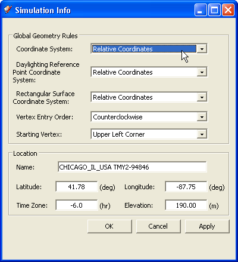
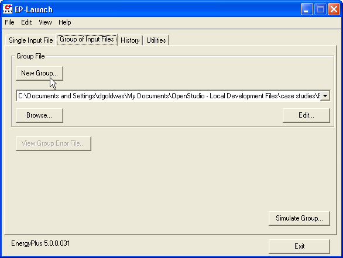
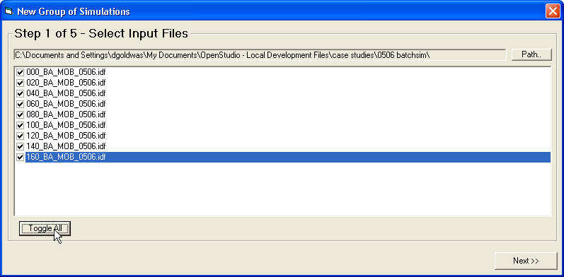
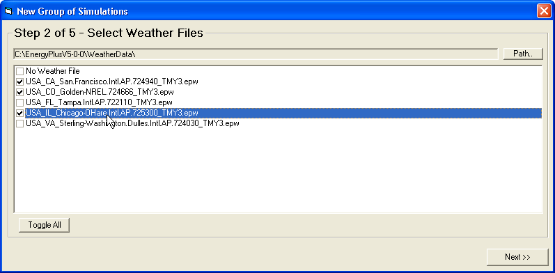
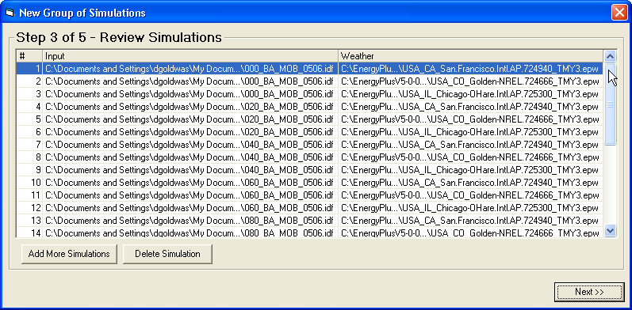
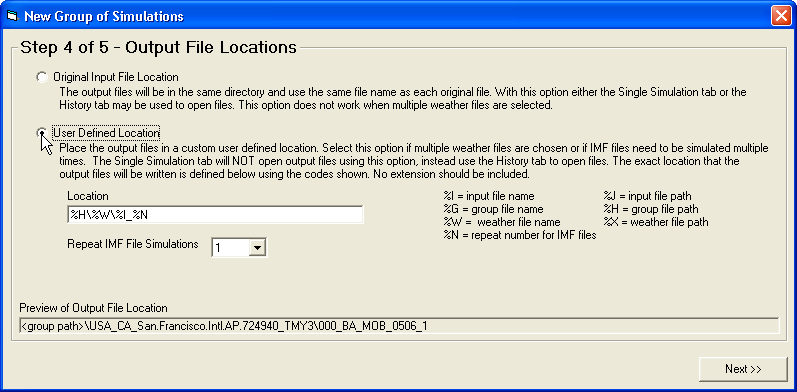
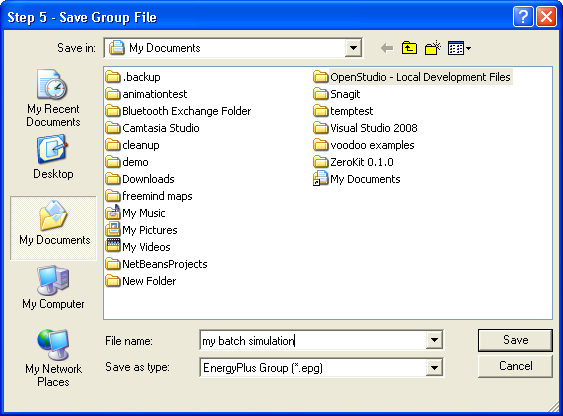
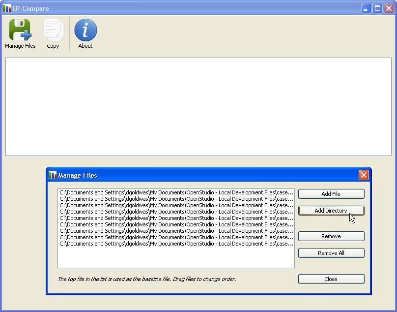
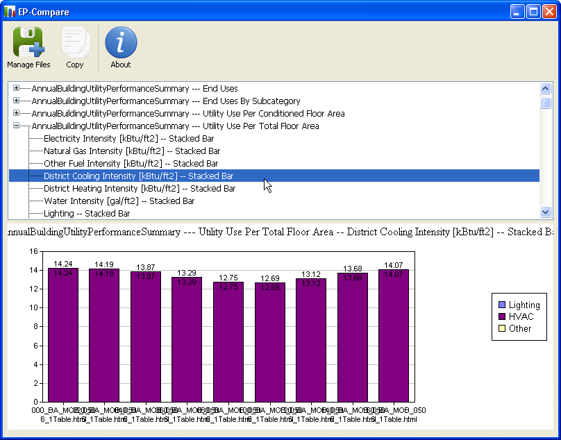
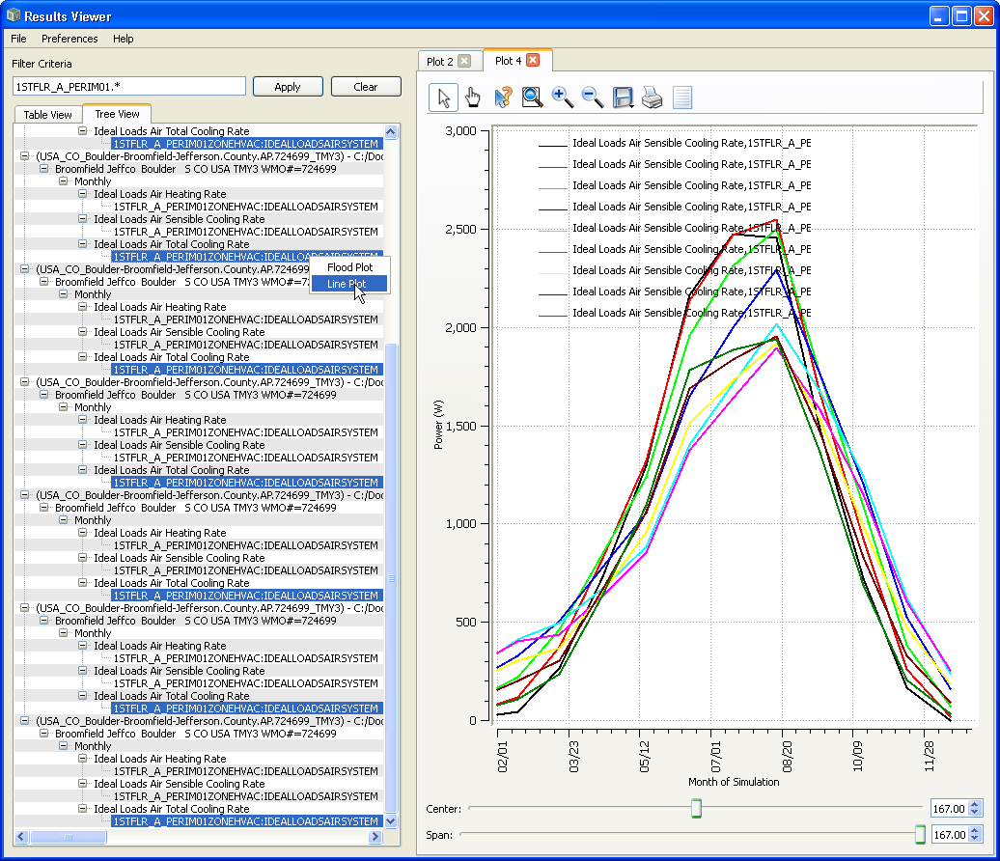

IDF 301 - Batch running multiple simulations using
EP-Launch
Prepare IDF files
Often it is nice to run simulations on a series of
models that have one aspect changed slightly from model to model to
look at energy sensitivity to the aspect being altered. Below are some
examples of what you might vary from one model to the next.
building orientation
wall R-value
percentage of glazing
geometry of shading devices
changes to occupancy schedule
aspect ratio of building
number of floors
building location
solar panel positioning
The first step is to create a series of IDF files
based on an original file. There may be times that you don't need to
create multiple IDF files. For example if you are just simulating a
design in multiple cities, or if you are using a tool that will
generate the design variations for you. For this demonstration the IDf
creation will be manual, and the aspect of the design that will change
is the building orientation.
The first step is to open your IDF file in OpenStudio
and go to the plugins menu in
SketchUp. Choose "Plugins/OpenStudio/Simulation Info". Change the
Coordinate System to "Relative Coordinates".
 (Credit: David Goldwasser/NREL)
Once the coordinate
system has been set, save and close your IDF file. Then create as many
copies of the file as you want to run. Rename them to identify what is
changing, for example, adding a prefix of "020" to identify a rotation
angle of 20 degrees.
Below you can see an IDF field where the North
rotation angle changed from "0" to "20" degrees.
Once your files have been created go to the
EnergyPlusV5-0-0 folder and open the "EP-Launch.exe". This application
can be used to run single
simulations or to run multiple simulations. Press the "New Group"
button to get started. Note that on the Mac OS Ep-Launch light doesn't
support batch or group simulations.
 (Credit: David Goldwasser/NREL)
The next step is to choose the IDF files you want to
simulate. Once you define the path you can choose all of the files or
manually pick them.
 (Credit: David Goldwasser/NREL)
Next you can pick one or a group of weather files. If
you choose a group of weather files then the list of IDF files will be
simulated for each weather location. So if you have 10 IDF files
and 4 weather files, you will have 40 simulations run.
 (Credit: David Goldwasser/NREL)
After you choose the IDf and weather files, you have
an opportunity to add additional simulations, or remove specific
ones from the list.
 (Credit: David Goldwasser/NREL)
Next you define where the simulation results will be
saved. Choose "User Defined Location".
 (Credit: David Goldwasser/NREL)
You will be prompted for a path to save the
EnergyPlus Group file. This saves all of your preferences making it
easy to re-run the batch simulation if you make changes to the IDF
files. After that choose "Simulate Group" to start the simulations.
 (Credit: David Goldwasser/NREL)
When the simulation run is done you will have a sub
folder for each weather location setup for the group. All of the
simulation results are inside of the
corresponding
weather folder.
You can view the simulation results for each
simulation like you would
for a single simulation. You can look at the html and error files, and
can open the IDF in OpenStudio and load the ESO file.
There are
also some nice tools that work well for viewing results of multiple
simulations at once.
EP-Compare is made just for this. It is located under
the EnergyPlus install under "PostProcess\EP-Compare\EP-Compare.exe".
When you first open it choose "Manage Files" and then choose the
directory with the simulations you want to compare.
 (Credit: David Goldwasser/NREL)
Once the files are loaded you can view the data in a
variety of different ways. Each section of the graph is for one of
the simulation runs. In this case North rotation of "0" is at the left,
and "160" is at the right (20 degree steps). It was a symmetrical
building so the simulation set didn't need to go through the entire 360
degrees of rotation.
 (Credit: David Goldwasser/NREL)
ResultsViewer is another application for viewing
simulation results. While it is very nice for viewing details from a
single simulation, it can also open multiple SQL files at once. Then if
you use the filter tool you can trim down your list of variables and
choose one from each simulation file. ResultsViewer will show you a
more detailed picture about specific times of year or times or times of
day. "ctrl" click each value you want and then right click and choose
"line plot". The graph below shows monthly results, which was requested
along with hourly values in the IDF files.
(Credit: David Goldwasser/NREL)
The graph above looks at the entire building, but you
can also look at specific zones. The graph below shows the Sensible
Cooling Rate for one of the first floor perimeter zones. You can
see there is some cross over in the stacking order of the lines
depending upon the time of year. This
could be a good tool to inform what shading devices might need to look
like on different facades depending upon the building orientation.
 (Credit: David Goldwasser/NREL)
Once you have completed your batch simulation and
reviewed the results hopefully you have gained information to inform
your design process. There could be a number of things you could do
next to follow up.
You may want to change the building design and then
go back and re-run the simulation group again.
If you are happy that you have addressed the
building orientation for project, then maybe you create a new
simulation group to study the percentage of glazing, shading devices,
or on envelope constructions.
This is a powerful tool that leverages the work you
have already done to create the energy model. It also helps to validate
assumptions about the efficiency of different design variations.